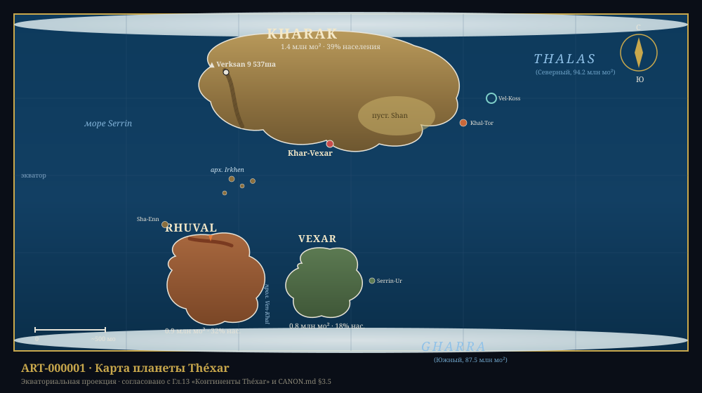

Глава 13: Континенты Théxar
«Три континента — три характера. Kharak — старый, богатый, мудрый. Rhuval — молодой, страстный, воинственный. Vexar — отрешённый, загадочный, гордый. Так говорят географы. Но жители каждого уверены, что их континент — лучший. И каждый прав по-своему.» — «География для путешественников», популярное издание, +2 500 г. Э.Е.
Связанные разделы: → см. [Гл.03, «Планета Théxar»], → см. [Гл.12, «Геологическая эволюция»], → см. [Гл.11, «Экология»] Объём: 35 страниц Ключевой принцип: суша Théxar представлена тремя континентами — Kharak, Rhuval, Vexar — и системой островных территорий. Разница в их размерах, положении и природных условиях предопределила экономическую специализацию и культурные различия.
Введение
Общая площадь суши Théxar составляет ~3.3 млн мо² — около 33% поверхности планеты. Три континента — Kharak, Rhuval и Vexar — различаются по размеру, геологическому возрасту, климату и минеральным ресурсам. Каждый из них представляет собой не просто географический регион, а отдельный мир со своей историей формирования, экосистемой и культурной традицией. Вокруг них расположены шельфовые моря, островные архипелаги и коралловые системы, дополняющие континентальную географию.
КЛЮЧЕВОЙ ФАКТ
Все три континента Théxar имеют разное геологическое происхождение. Kharak — древнейший, его ядро сформировалось ~5.5 млрд циклов назад. Rhuval и Vexar — продукты распада южного суперконтинента Vaal-Kharak, завершившегося ~1.0 млрд циклов назад. → см. [Гл.12, «Тектоника плит»]
13.1 Географический обзор
ГЕОГРАФИЧЕСКАЯ КАРТА THÉXAR (схематично)
Северный полюс
▓▓▓▓▓▓▓▓▓▓▓▓▓▓
╔══╧══╧══╧══╧══╧══╗
╔══╝ ╔═══════════╗ ╚══╗
╔╝ ║ ║ ╚╗
║ Море ║ Kharak ║ ║
║ Серрин║ (1.4) ║Море ║
║ ║ ║Тхалас║
║ ╚═══════════╝ ╔╝
╚══╗ ╔═══════╗ ╔╝
║ ║Rhuval║ ║
║ ║(0.9) ║ ║
║ ╚═══════╝ ║
║ ╔═══════╗ ╔╝
║ ║ Vexar ║ ║
║ ║(0.8) ║ ╔╝
║ ╚═══════╝ ║
╚══╗ ╔═══╝
║▓▓▓▓▓║
Южный полюс
Условные обозначения:
▓▓ — полярный ледяной щит
═══ — границы континентов
─── — морские границы
Рис. 13.1. Схематическая карта Théxar. Цифры в скобках — площадь континента в млн мо².

Рис. 13.1a. Полная векторная карта Théxar — ART-000001.
ТАБЛИЦА 13.1: Сравнительная характеристика континентов
Параметр Kharak Rhuval Vexar Острова Площадь (млн мо²) 1.4 0.9 0.8 0.2 Население (млрд) ~1.1 ~0.9 ~0.5 ~0.3 Доля населения 39% 32% 18% 11% Плотность (чел/мо²) 774 992 653 1 500 Высшая точка 9 537 ша 7 915 ша 7 451 ша 3 415 ша Крупнейший город Khar-Vexar Ven-Khal Shan-En Khal-Tor Климат. зон 5 5 4 2–3 Доля эндемиков 12% 18% 31% 45%
13.2 Kharak — Северный континент
ПРОФИЛЬ: Континент Kharak
Параметр Значение Площадь 1.4 млн мо² Расположение 15° с.ш. – 72° с.ш. Население ~1.1 млрд (39% планеты) Плотность 774 чел/мо² Крупнейший город Khar-Vexar (18.6 млн) → см. [LOC-0001] Высшая точка г. Verksan (9 537 ша) → см. [LOC-0002] Крупнейшая река Khar-Tor (870 мо) Крупнейшее озеро Mor-Ven (1 769 мо²) Климат От экваториального до полярного Эндемики флоры ~12%
Kharak (от корня khar- — «свет», «звезда») — крупнейший континент, древнее ядро цивилизации Xha'Ruun. Его название отражает не только географическое положение (северное, под светом Khar'Vex), но и культурную роль: именно здесь зародилась Первая Империя, здесь находится столица, и здесь сосредоточена большая часть промышленности и науки Союза.
13.2.1 Рельеф и геология
Kharak геологически наиболее стар — его кратон (древнее ядро) имеет возраст ~5.5 млрд циклов. Рельеф характеризуется тремя основными зонами:
- Центральная равнина — обширная низменность (0.34 млн мо²) с высотами 244–732 ша над уровнем моря. Сформирована древними речными отложениями; сегодня это главная сельскохозяйственная житница планеты.
- Хребет Khar-Tor — горная цепь вдоль западного побережья, протяжённость ~976 мо. Содержит высочайшую вершину Théxar — гору Verksan (9 537 ша). Зона активного горообразования с богатыми рудными месторождениями. → см. [LOC-0052]
- Пустыня Shan — каменистое плато на юго-востоке (0.14 млн мо²). Поверхность — щебнистые равнины и останцы древних пород. Богата ураном и торием.
13.2.2 Климат
Kharak охватывает пять климатических зон — от экваториальных лесов на южном побережье до полярных пустынь на севере:
| Зона | Доля континента | Средняя T (°X) | Осадки (мм/год) |
|---|---|---|---|
| Экваториальные леса | 8% | 58.1…62.5 | 2 500–4 000 |
| Саванны | 18% | 54.9…60.3 | 800–1 500 |
| Умеренная зона | 35% | 47.8…56.0 | 500–900 |
| Бореальная (тайга) | 28% | 39.6…50.5 | 300–600 |
| Полярная тундра | 11% | 31.5…47.8 | 100–300 |
13.2.3 Регионы
- Дельта Thar (0.03 млн мо²) — юго-восточное побережье, где река Thar впадает в море Serrin. Древнейший культурный центр; здесь находятся первые поселения цивилизации (→ см. [EV-0001]) и столица Khar-Vexar.
- Плато Serrin (0.07 млн мо²) — древнее базальтовое плато на севере, возраст >2 млрд циклов. Одно из старейших геологических образований планеты.
- Северная тайга (0.17 млн мо²) — обширная зона хвойных лесов. Важный источник биологических ресурсов.
13.2.4 Экономическое значение
Kharak производит ~48% ВВП Союза Xha'Ruun. Ключевые отрасли: добыча тория и железа (хребет Khar-Tor), сельское хозяйство (Центральная равнина), высокие технологии (Khar-Vexar), наука и образование. На континенте расположены 3 из 12 гильдийных штаб-квартир.
13.3 Rhuval — Южный континент
ПРОФИЛЬ: Континент Rhuval
Параметр Значение Площадь 0.9 млн мо² Расположение 38° ю.ш. – 72° ю.ш. Население ~0.9 млрд (32% планеты) Плотность 992 чел/мо² Крупнейший город Ven-Khal (12.4 млн) Высшая точка г. Moraat (7 915 ша) Крупнейшая река Thash-Ven (776 мо) Климат Тропический — Субполярный Эндемики флоры ~18%
Rhuval (от корня rhuun — «народ», «сообщество») — второй по величине континент, вытянутый с севера на юг. Благодаря меридиональной ориентации он охватывает огромный диапазон климатических зон: от тропических джунглей на севере до ледников на юге.
13.3.1 Рельеф и геология
Rhuval образовался в результате распада суперконтинента Vaal-Kharak ~2.5 млрд циклов назад. Его геология более молодая и активная:
- Плато Raal — центральное высокогорье (1 463–3 415 ша над ур. моря), сформированное мафическими интрузиями прототектонической эры. Содержит богатейшие месторождения платины, хрома, марганца. → см. [LOC-0053]
- Горная цепь Irkhen — вулканическая гряда вдоль северного побережья. Высочайшая точка — г. Moraat (7 915 ша). Вулканическая активность выше средней по планете.
- Долина Thash-Ven — плодородная аллювиальная равнина вдоль крупнейшей реки континента.
13.3.2 Климат
| Зона | Доля континента | Средняя T (°X) | Осадки (мм/год) |
|---|---|---|---|
| Тропические леса | 15% | 57.0…61.4 | 3 000–5 000 |
| Саванны и редколесья | 22% | 54.9…59.2 | 1 000–2 000 |
| Субтропики | 25% | 51.6…57.0 | 500–1 200 |
| Умеренная зона | 23% | 47.3…52.6 | 400–800 |
| Субполярная | 15% | 42.4…47.3 | 200–500 |
13.3.3 Экономическое значение
Rhuval — промышленное сердце Союза: ~35% ВВП. Ключевые отрасли: горная добыча (Pt, Au, Ag, Cr), тяжёлая промышленность, нефтехимия. На континенте расположены крупнейшие промышленные центры и порты.
Rhuval также известен своей военной традицией — здесь находятся главные оборонительные сооружения и академии военного дела.
ВАЖНО
Rhuval — единственный континент с активным вулканизмом, представляющим угрозу для населённых пунктов. Последнее крупное извержение (цепь Irkhen, +3 890 г. Э.Е.) привело к временной эвакуации 2 млн человек. Система мониторинга вулканов на Rhuval — самая развитая на планете.
13.4 Vexar — Восточный континент
ПРОФИЛЬ: Континент Vexar
Параметр Значение Площадь 0.8 млн мо² Расположение 42° ю.ш. – 68° ю.ш. Население ~0.5 млрд (18% планеты) Плотность 653 чел/мо² Крупнейший город Shan-En (7.8 млн) Высшая точка г. Sharrus (7 451 ша) Крупнейшая река Sharrus (638 мо) Климат Субтропический — Субполярный Эндемики флоры ~31%
Vexar (от корня vex- — «давать», «творить») — наименьший из трёх континентов, наиболее изолированный географически и культурно. Отделён от Rhuval проливом Ven-Khal (ширина 85 мо в самой узкой части).
13.4.1 Изоляция и эндемизм
Vexar отделился от Rhuval ~1.0 млрд циклов назад и с тех пор развивался изолированно. Это привело к:
- 31% эндемичных видов растений — против 12% на Kharak и 18% на Rhuval
- Уникальной экосистеме лесов, где доминируют кремний-обогащённые растительные формы
- Отсутствию крупных наземных хищников (экологическая ниша занята мелкими стайными видами)
Vexar по степени эндемизма не имеет аналогов среди континентов Théxar — 31% уникальных видов растений при полной изоляции в масштабе целого континента.
13.4.2 Культурная специфика
Изоляция Vexar сформировала уникальную культурную традицию:
- Философская школа «Третьего пути» (независимость от гильдий Kharak)
- Собственная архитектурная традиция (использование местного чёрного базальта)
- Развитая система заповедников — 15% территории объявлены «Зонами Тишины» (→ см. [Закон Тишины], CANON.md §4.3)
13.4.3 Экономическое значение
Vexar производит ~15% ВВП. Ключевые отрасли: редкоземельные элементы (Ti, Mn, Cr, Co), био-фармацевтика, квантовые вычисления, туризм. Континент известен своими исследовательскими институтами и биотехнологическими лабораториями.
13.5 Островные территории
Общая площадь островов Théxar — ~0.2 млн мо² (~6% суши). Крупнейшие архипелаги:
ТАБЛИЦА 13.2: Крупнейшие острова Théxar
Остров / Архипелаг Площадь (мо²) Принадлежит Тип Особенность Khal-Tor 49 600 Kharak Вулканический Активный вулкан, плодородные почвы Sha-Enn 37 200 Rhuval Материковый Крупнейший остров Rhuval, курорты Serrin-Ur 24 800 Vexar Материковый Заповедник, доступ仅限于 научные экспедиции Irkhen (арх.) 17 400 Спорный Кораллово-вулканический 24 острова, культурный перекрёсток Vel-Koss 15 700 Kharak Коралловый Атолл, морской заповедник Thash-Mor 12 800 Rhuval Осадочный Сельское хозяйство Khar-Ven 11 600 Vexar Вулканический Биостанция
Архипелаг Irkhen заслуживает особого упоминания как зона культурного обмена и исторических конфликтов между Kharak и Rhuval. Расположенный в море Irkhen между двумя континентами, архипелаг на протяжении тысячелетий служил мостом — культурным, торговым и военным. Каждый из 24 населённых островов архипелага обладает собственной культурной традицией, синтезирующей элементы обеих материковых цивилизаций.
Спутники Théxar — Serrin и Thel — также являются формальными территориями Союза, но относятся не к континентам, а к внепланетным владениям. → см. [Гл.03, «Спутники»]
13.6 Экологические зоны
Несмотря на меньшее разнообразие широт (наклон оси 14.2°), Théxar демонстрирует богатую палитру экосистем благодаря сочетанию факторов:
- Разная высота над уровнем моря — от прибрежных низменностей до гор выше 8 537 ша
- Ветровая тень горных хребтов — пустыня Shan сформирована дождевой тенью Khar-Tor
- Океанские течения — тёплое течение Khar-Vex вдоль западного побережья Kharak, холодное течение Thel вдоль восточного
- Геотермальные оазисы — на вулканических плато Rhuval
ЭКОЛОГИЧЕСКИЕ ЗОНЫ (схема)
Высота (ша)
9755│ ╱╲
8537│ ╱ ╲ — Снега и льды
7317│ ╱ ╲
6098│ ╱ ╲ — Горные пустыни
4878│ ╱ ╲
3659│ ╱ ╲ — Высокогорные луга
2439│ ╱ ╲
1220│ ╱ ╲ — Леса и саванны
0│ ╱________________╲
└─────────────────────
Широта →
Рис. 13.2. Высотная поясность на континентах Théxar (высота в ша).
ТАБЛИЦА 13.3: Основные биомы Théxar
Биом Площадь (млн мо²) Доля суши Где встречается Тропические леса 0.34 10.3% Юг Kharak, север Rhuval Саванны и редколесья 0.52 15.9% Центр Kharak, центр Rhuval Пустыни 0.28 8.6% Пустыня Shan (Kharak) Умеренные леса 0.59 17.9% Юго-восток Kharak, Vexar Тайга (хвойные леса) 0.47 14.4% Север Kharak Луга и степи 0.36 11.1% Центр Rhuval Тундра 0.23 7.1% Север Kharak Ледники 0.17 5.3% Полюса Антропогенные 0.19 5.8% Города, фермы, инфраструктура Внутренние воды 0.12 3.5% Реки, озёра
Итоги главы
Ключевые выводы:
- Суша Théxar состоит из трёх континентов: Kharak (1.4 млн мо²), Rhuval (0.9 млн мо²), Vexar (0.8 млн мо²) и островов (0.2 млн мо²).
- Kharak — древнейший континент, ядро цивилизации Xha'Ruun, ~39% населения планеты.
- Rhuval — промышленный центр с высокой вулканической активностью, ~32% населения.
- Vexar — изолированный континент с уникальной биотой и культурой, ~18% населения.
- Эндемизм на Vexar достигает 31% — в 2.6× выше, чем на Kharak.
- Архипелаг Irkhen — зона культурного синтеза между Kharak и Rhuval.
- 10 основных биомов, от тропических лесов до полярных пустынь.
Установленные факты (для CANON.md):
- 3 континента: Kharak (1.4 млн мо²), Rhuval (0.9 млн мо²), Vexar (0.8 млн мо²) — ПОДТВЕРЖДЕНО
- Общая площадь суши: ~3.3 млн мо² (33% поверхности)
- Крупнейший город: Khar-Vexar (18.6 млн) — ПОДТВЕРЖДЕНО
- Высшая точка: г. Verksan (9 537 ша) — ПОДТВЕРЖДЕНО
- Крупнейшая река: Khar-Tor (870 мо)
- Архипелаг Irkhen: 24 населённых острова
- Общее население: ~2.8 млрд (распределение 39/32/18/11%)
- Эндемизм Vexar: 31% видов растений
Связь с другими главами:
- → см. [Гл.03, «Планета Théxar»] — общий профиль планеты, континенты
- → см. [Гл.11, «Экология»] — флора и фауна по континентам
- → см. [Гл.12, «Геологическая эволюция»] — тектоническая основа рельефа
- → см. [Гл.08, «Культура»] — культурные различия трёх континентов
- → см. [Гл.09, «Технологии»] — промышленная специализация регионов
- → см. [ПРИЛ:physical-ref] — физические параметры планеты
Конец главы 13. Согласовано с CANON.md v0.3.0